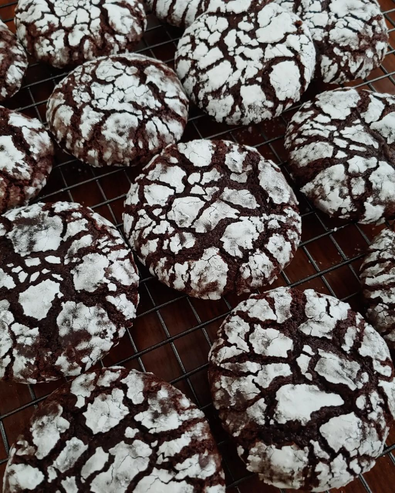

Chocolate Crinkles

Source: allrecipes
Description
Chocolate Crinkles are soft, slightly crunchy, fudgy and chocolatey cookies that are covered in confectioners' sugar and have a taste similar to brownies!
Ingredients
- 1 cup unsweetened cocoa powder
- 2 cups white sugar
- ½ cup vegetable oil
- 4 eggs
- 2 teaspoons vanilla extract
- 2 cups all-purpose flour
- 2 teaspoons baking powder
- ½ teaspoon salt
- ½ cup confectioners' sugar
Steps
-
In a medium bowl, mix together cocoa, white sugar, and vegetable oil. Beat in eggs one at a time, then stir in the vanilla. Combine the flour, baking powder, and salt; stir into the cocoa mixture. Cover dough, and chill for at least 4 hours.
-
Preheat oven to 350 degrees F (175 degrees C). Line cookie sheets with parchment paper. Roll dough into one inch balls. I like to use a number 50 size scoop. Coat each ball in confectioners' sugar before placing onto prepared cookie sheets.
-
Bake in preheated oven for 10 to 12 minutes. Let stand on the cookie sheet for a minute before transferring to wire racks to cool.